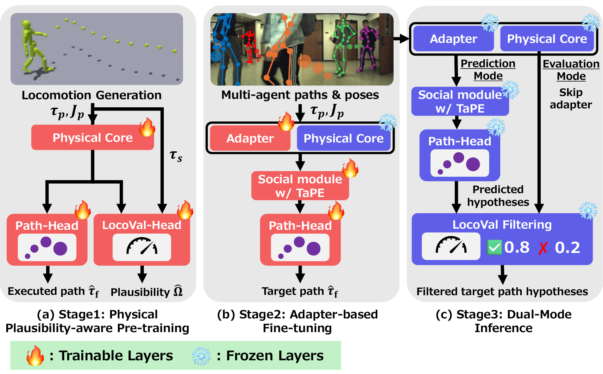
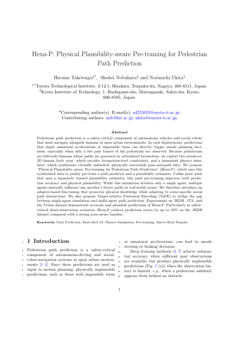

Both methods see only the last two frames (0.8 s) of a JRDB pedestrian and predict five paths for the next 4.8 s. Black: observed path, red: ground truth, blue: Social-Trans, green: Hexa-P.
Pedestrian path prediction is a safety-critical component of autonomous vehicles and social robots that must navigate alongside humans in open urban environments. In such deployments, predictions that imply unnatural accelerations or impossible turns can directly trigger unsafe planning decisions, especially when only a few past frames of the pedestrian are observed. Because pedestrians are full-body humans whose paths are governed by articulated locomotion, we exploit two resources: 3D human body pose, which encodes locomotion-level constraints, and a humanoid physics simulator, which synthesizes virtually unlimited, physically executable pose-and-path data. We propose “Physical Plausibility-aware Pre-training for Pedestrian Path Prediction” (Hexa-P), which uses this synthesized data to jointly pre-train a path predictor and a plausibility estimator. Unlike prior work that uses a separately trained plausibility estimator, this joint pre-training improves both prediction accuracy and physical plausibility. While this simulation involves only a single agent, multiple agents mutually influence one another's future paths in real-world scenes. We therefore introduce an adapter-based fine-tuning that preserves physical knowledge while adapting to scene-specific social path interactions. We also propose Target-relative Positional Encoding (TaPE) to bridge the gap between single-agent simulation and multi-agent path prediction. Experiments on JRDB, JTA, and the Urban dataset demonstrate accurate and plausible predictions of Hexa-P. Particularly in safety-critical short-observation scenarios, Hexa-P reduces prediction errors by up to 50% on the JRDB dataset compared with a strong pose-aware baseline.

The same JRDB pedestrian with fewer observed frames. Blue: Social-Trans, green: Hexa-P. The curve below gives the ADE on the JRDB test split.
The physics-simulated humanoid of the pre-training walks the paths that Hexa-P predicts from its observed motion (green line, goal as a ball). Over 2,048 rollouts, it never falls and ends within 0.5 m of the predicted goal.
A robot crosses replayed JTA crowds with a Social Force planner that avoids the predicted paths. Collision rate over 100 test episodes. In the videos, gray discs are people, dots are the positions predicted 2 s ahead, and gray crosses are the hypotheses that LocoVal rejects.
Randomly chosen test windows with two observed frames. Blue: Social-Trans, green: Hexa-P.

Hiromu Taketsugu, Shohei Nobuhara and Norimichi Ukita. Hexa-P: Physical Plausibility-aware Pre-training for Pedestrian Path Prediction. Pattern Analysis and Applications, 2026.
Code, configurations and instructions to reproduce the experiments are on GitHub; weights and preprocessed data are on Hugging Face.
@article{taketsugu2026hexap,
title = {Hexa-P: Physical Plausibility-aware Pre-training for Pedestrian Path Prediction},
author = {Taketsugu, Hiromu and Nobuhara, Shohei and Ukita, Norimichi},
journal = {Pattern Analysis and Applications},
year = {2026}
}